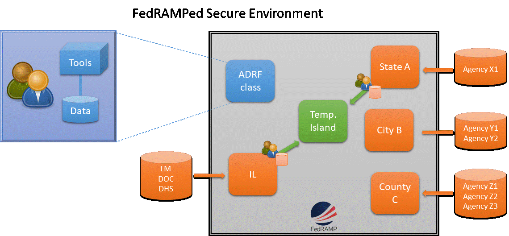
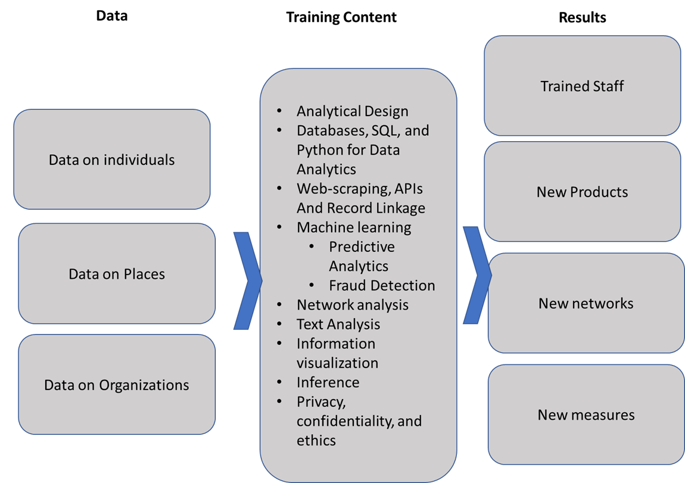
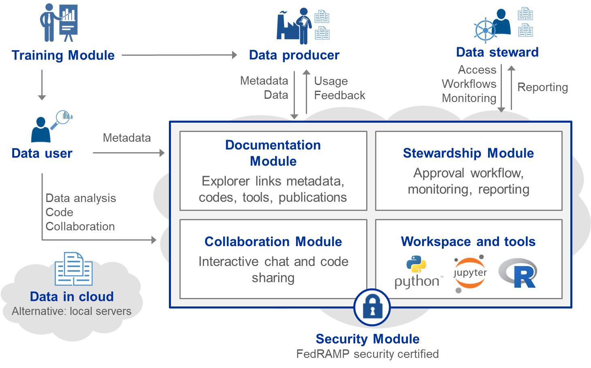

Lessons Learned1
Julia Lane
Wagner School of Public Policy, New York University
2019
Introduction
What lessons can be drawn from the existing efforts to make government administrative data available to researchers? In what ways are those efforts applicable to third party, private sector data such as micro level social media data, mobile phone data? And in what ways do social media and similar data pose distinctive challenges
We have learned a great deal about what works and what doesn’t in terms of sharing government administrative data (Reamer and Lane 2017). In this paper I argue that we have learned that a successful system has to be designed with both value and sustainability at its core. I argue that much can be learned from studying data driven companies in the private sector—Google, Amazon, Facebook and Apple – which derive their market power from collecting, curating and using massive amounts of data to produce products in demand and hiring the best and brightest staff to do so (Galloway 2017).
Successful efforts have created value at the local, regional and state level by making full use of the massive computing power, statistics and human and artificial intelligence now available. They are also characterized by the creation of new products developed as a result of the interaction of the people who will use the data, researchers, and analysts (Trewin et al. 2007; Lane 2007). These are canonical principles, and should not differ, regardless of the type of data that are used. Any system should be demand driven—build on the needs of data to serve people and communities—interacting with researchers who generate the ideas. The curation and use of social media and other data is more challenging than administrative records; automation should be at the core of any design.
I will discuss each of these lessons in the context of a successful initiative which I am very familiar with - the Coleridge Initiative. Established in order to inform the Commission on Evidence based Policy, and informed by the success of the LEHD program as well as the growth of the Institute for Research on Innovation and Science, it has expanded to provide administrative data access and use to both researchers and government analysts.
Context
Administrative data are generated as a result of the implementation of government programs. There are both technical and human reasons why researcher access has been difficult to achieve. The technical reasons include concerns about security, the cost and burden of providing access, difficulty of tracking use and poor data quality and documentation. The human reasons include the risk of bad analysis or bad faith by researchers, the legal mandates surrounding data access and use and workforce capacity.
There have been a number of infrastructures that have been developed in US with mixed results. The Center for Economic Studies was established by Robert McGuckin at the US Census Bureau in the 1980’s (McGuckin and Pascoe 1988); that has since evolved into a major source of Census Bureau and other agency administrative and survey data, with access available in 26 federal statistical research data centers at universities across the country. The LEHD program established in the late 1990s has grown into a major national program(Abowd, Haltiwanger, and Lane 2004; Burgess, Lane, and Theeuwes 1998). The NORC/University of Chicago, established in the mid 2000’s provides researcher access to administrative data (Lane and Shipp 2008). The Laura and John Arnold Foundation has established policy labs in several key states (Laura and John Arnold Foundation 2018). Integrated Data Systems have been funded by the US Departments of Education and Labor (Culhane et al. 2017). A very useful overview is provided in the report of the Commission on Evidence based Policy (Commission on Evidence based Policy 2017). However, current access to administrative records is ad-hoc, time-consuming and costly (Goerge 2017).
Other countries have similarly mixed results. The German research data centers have been remarkably successful, moving the country from a situation with very limited access to one where even overseas researchers can have access with an RDC within an RDC program. (Bender and Heining 2011; Bender et al. 2013). And the New Zealand Integrated Data Infrastructure has formed the basis of both substantial research activity and government decision-making (Statistics New Zealand 2016). However, the Administrative Data Research Network established by the UK Economic and Social Research Council has not fulfilled expectations and has been restructured (Elias 2014, 2018; Jones and Elias 2006).
The reasons for the failures have been instructive. One major factor slowing access at the Census Bureau has been the manual way in which access and use are tracked; although the system has greatly expanded, the tracking system is still largely based on pdfs and has become overwhelmed by the complexity. There are also serious issues with data stewardship—one of the major flagship research activities was not approved by the agency providing administrative records to the Census Bureau, and they found out about the research when their administrator read the results in the New York Times. In other examples, such as the Integrated Data Systems, the federal government has spent large sums of money to establish them, but they are used by only one or two people who put the data together, and the value proposition within the states have not been established.
What has worked
Governments’ willingness to share administrative data across agencies and with researchers is limited. One reason is that the potential value of using data across agencies is difficult to realize—there are many legal and technical hurdles to clear and few prototype successes to point to. Another is that the pressures to meet existing program needs make it difficult for agencies to try something new and create pipelines of new products. A third is that government salary structures make it difficult to hire and retain enough in-house data analysts, so agencies don’t have the capacity to work with new linked data. Finally, researchers have different incentive structures than do government agencies—their incentives are to publish, not to create long term programmatic improvements. These combined challenges have led to the current situation - agencies cannot get the significant resources necessary to make use of new data, and because they’ don’t use new data, they don’t get new resources.
Our Coleridge Initiative approach broke through the negative spiral by developing a demand-driven approach: creating products that demonstrate value to agency champions. That approach (1) provides an empirical basis for addressing compelling agency problems, (2) develops a government workforce with the expertise and capacity to apply data analytics to those problems, and (3) creates initial products based on staff projects have value to government agency leaders. It creates incentives to provide data, resources to work on high priority problems and demonstrated value to sharing data across agency lines. We demonstrated the value of linked administrative data by engaging staff from multiple agencies to work on cross-agency problems. We provided a secure remote access environment that enables agencies to share data in the cloud, without physically having to rely on one agency hosting another agency’s data.

The first step in getting agencies to provide data was creating incentives. In our experience, the primary incentive is producing products that have value to the agency. Many agencies are not legally permitted to share data for research unless the work that is to be done is consistent with the agency mission. We worked with agency senior management to identify datasets that could be used, in combination with other agencies, to produce high value products, as well as develop the associated memoranda of understanding. The second step was to provide resources that enable both practitioners—agency staff—and researchers to acquire the skills and develop the capacity to demonstrate the value of joined-up data. The third step was to demonstrate the value of working across agency lines.
We did this by developing Applied Data Analytics training classes that were designed to produce products that had value to agencies when linking data. This approach had several attractive features. First, it built a network of agency staff with an understanding of the characteristics of data from other agencies, who have an understanding of the data’s information content and accuracy and fitness for use. Second, it developed a core data infrastructure that can be used for other future projects. Finally, it produced a set of prototype products of value to the collaborating agencies—and, in turn, to the public.

In sum, the strategy is to build ongoing agency use of linked administrative records and other sources of data for program evaluation through demonstrating value to the agency.It builds on well-established expertise in all of these dimensions. The approach is designed to scale nationally. I think a model approach would be based on the agricultural extension programs which has been one of the sources of the incredible success of US agriculture. The underlying framework—farmers had real problems, agricultural researchers worked to collect data and develop methods to develop solutions, and the extension programs created the operational bridge between the two—can successfully be applied to develop community extension programs that could help build a lasting link between the governments that provide administrative data and the researchers that want to make use of them.
Looking forward: Scaling and Automation
The scaling and automation of data collection, curation and use has transformed economic activity. The largest companies in the world are not companies that have automated the production of things, like GE and GM, but companies that have automated the use of data, like Amazon, Apple, Facebook and Google (Galloway 2017). As Marshall noted, “machinery takes over sooner or later all monotonous work in manufacture” (Marshall, cited in Warsh 2007). Any future design should include automation at the core in several key areas—data stewardship, documentation, and collaboration—in a secure environment

Data stewardship: It is critical that agencies (and their lawyers) know that their data are secure. The new availability of FedRAMP certification provides that assurance, albeit at high cost.
It is also important that, at scale, data providers, owners, and stewards can monitor the usage of their datasets at a glance and find the information that is important to them. An automated system enables stewards to see how many projects are using their datasets, for what purposes (e.g., by what code they are developing around the dataset, and what datasets they are deriving from, linking to their datasets, and annotating). Easy-to-understand visualizations that will allow stewards to see the larger picture of how many projects are using their data, for what purposes, and when, facilitates data access reports back to the agency which provided the data and helps minimize the risk and concerns associated with sharing data.
Documentation and Collaboration The use of data depends critically on knowing how it has been produced and used before: the required elements are what do the data measure, what research has been done by what researchers, with what code, and with what results. Acquiring that knowledge has historically been manual and inadequate. The challenge is particularly acute in the case of confidential data on human subjects, since it is impossible to provide fully open access to the sensitive source files. Put simply, when researchers or analysts work to use or link confidential data, they are largely ignorant of what work has gone before. Data dictionaries are sparse, incorrect, or non-existent. Access to and resultant re-use of code is rare. There is almost no documentation of the thousands of pre-processing decisions that are inherent in any analysis. If research is to be replicable and reproducible, it will be necessary to foster community-wide and asynchronous collaboration allowing users to share information about potential uses and linkages between data as well crowdsource a deeper understanding of individual dataset variables over time
We envision the development of automated tools to create the equivalent of an Amazon.com or TripAdvisor for the access and use of confidential micro data. There are three steps involved here. The first is to use text analysis and machine learning techniques on a series of different pre-processed publication corpora to develop models for identifying the datasets, people, and additional desired information on research methods and data use referenced in each publication. The second is to then apply these machine learning models on a broader set of publications to validate the results, and then iterate on the most promising to improve the learning algorithms. The third is to use gamification approaches to a) incentivize human curation of the results and enable patterns to be identified and b) incentivize humans to contribute new tacit knowledge that was hitherto not routinely shared. An important feature will be to make it iterative in nature, providing a framework and a platform for creating significant human feedback to feed ongoing improvements in algorithmic learning about the traits of datasets, text and people.
References
Abowd, John M., John Haltiwanger, and Julia Lane. 2004. “Integrated Longitudinal Employer-Employee Data for the United States.” American Economic Review 94 (2): 224–29. doi:10.1257/0002828041301812.
Bender, Stefan, and Jörg Heining. 2011. “The Research-Data-Centre in Research-Data-Centre Approach: A First Step Towards Decentralised International Data Sharing.” IASSIST Quarterly 35 (3): 10–16.
Bender, Stefan, Ralf Himmelreicher, Sylvia Zühlke, and Markus Zwick. 2013. “Improvement of Access to Data from Official Statistics – the Case of Germany.” S16P1. http://epp.eurostat.ec.europa.eu/portal/page/portal/research_methodology/documents/S16P1_IMPROVEMENT_OF_ACCESS_TO_DATA_SETS_BENDER_END.pdf.
Burgess, Simon, Julia Lane, and Jules Theeuwes. 1998. “The Uses of Longitudinal Matched Employer/Employee Data in Labor Market Analysis.” In. Proceedings of the American Statistical Association.
Commission on Evidence based Policy. 2017. “The Promise of Evidence-Based Policymaking.” https://www.cep.gov/cep-final-report.html.
Culhane, Dennis, John Fantuzzo, Matthew Hill, and T. C. Burnett. 2017. “Maximizing the Use of Integrated Data Systems: Understanding the Challenges and Advancing Solutions.” The ANNALS of the American Academy of Political and Social Science 675 (1). SAGE Publications Inc: 221–39. doi:10.1177/0002716217743441.
Elias, Peter. 2014. “A European Perspective on Research and Big Data Access.” In Privacy, Big Data, and the Public Good: Frameworks for Engagement, edited by Julia Lane, Victoria Stodden, Helen Nissenbaum, and Stefan Bender, 173–91. Cambridge University Press.
———. 2018. “The UK Administrative Data Research Network: Its Genesis, Progress, and Future.” The ANNALS of the American Academy of Political and Social Science 675 (1): 184–201. doi:10.1177/0002716217741279.
Galloway, Scott. 2017. The Four: The Hidden DNA of Amazon, Apple, Facebook, and Google. New York: Portfolio/Penguin.
Goerge, Robert M. 2017. “Barriers to Accessing State Data and Approaches to Addressing Them.” The ANNALS of the American Academy of Political and Social Science 675 (1). SAGE Publications Inc: 122–37. doi:10.1177/0002716217741257.
Jones, Paul, and Peter Elias. 2006. “Administrative Data as a Research Resource: A Selected Audit.” ESRC National Centre for Research Methods.
Lane, Julia. 2007. “Optimizing the Use of Microdata: An Overview of the Issues.” Journal of Official Statistics 23 (3). Stockholm Statistics Sweden: 299–317.
Lane, Julia, and Stephanie Shipp. 2008. “Using a Remote Access Data Enclave for Data Dissemination.” International Journal of Digital Curation 2 (1): 128–34. doi:10.2218/ijdc.v2i1.20.
Laura and John Arnold Foundation. 2018. “Policy Labs.” http://www.arnoldfoundation.org/initiative/evidence-based-policy-innovation/policy-labs/.
McGuckin, Robert H., and George A. Pascoe. 1988. The Longitudinal Research Database (LRD): Status and Research Possibilities. Washington, DC: US Department of Commerce, Bureau of the Census.
Reamer, Andrew, and Julia Lane. 2017. “A Roadmap to a Nationwide Data Infrastructure for Evidence-Based Policymaking.” The ANNALS of the American Academy of Political and Social Science 675 (1). SAGE Publications Inc: 28–35. doi:10.1177/0002716217740116.
Statistics New Zealand. 2016. “Integrated Data Infrastructure.”
Trewin, Dennis, Otto Andersen, Teimuraz Beridze, Luigi Biggeri, Ivan Fellegi, and Tadeusz Toczynski. 2007. “Managing Statistical Confidentiality and Microdata Access: Principles and Guidelines of Good Practice.” Geneva, UNECE/CES.
Warsh, David. 2007. Knowledge and the Wealth of Nations: A Story of Economic Discovery. New York: WW Norton & Company.
This work draws heavily on conversations and collaborations with Frauke Kreuter, Rayid Ghani, Clayton Hunter, Brian Granger, Stefan Bender, Christian Hirsch, Hendrik Doll, Stu Feldman, Drew Gordon, Jonathon Morgan, Ekaterina Levitskaya, Daniel Castellani, Rafael Alves, Ophir Frieder, Jordan Boyd Graber, Evgeny Klochikhin, Christian Herzog, Ian Mulvaney, Alan Maloney, Daniel Hook. It has been supported by the generosity of Eric and Wendy Schmidt by recommendation of the Schmidt Futures program, the Alfred P. Sloan Foundation, the Overdeck Family Foundation, the Laura and John Arnold Foundation, and the Bill and Melinda Gates Foundation.↩︎